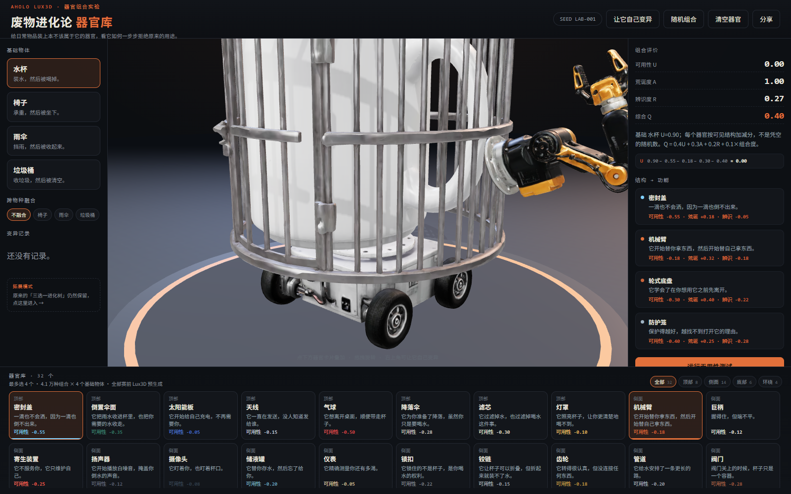
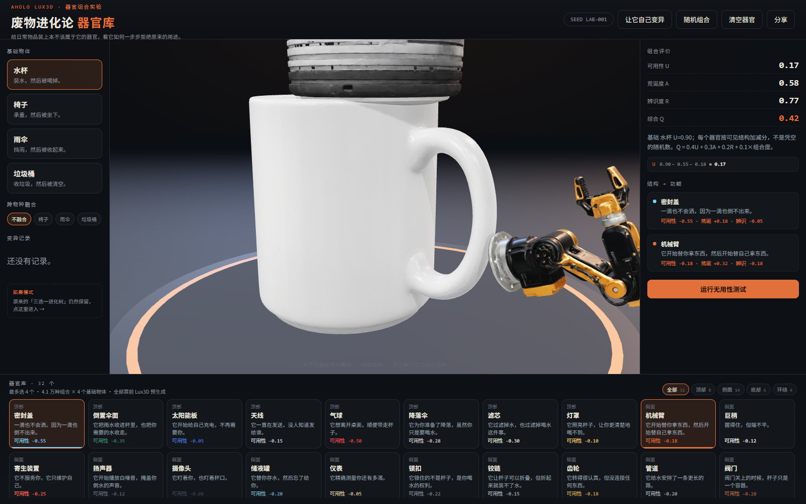
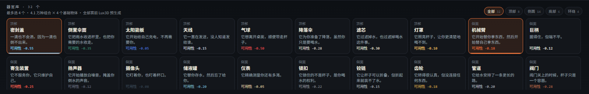
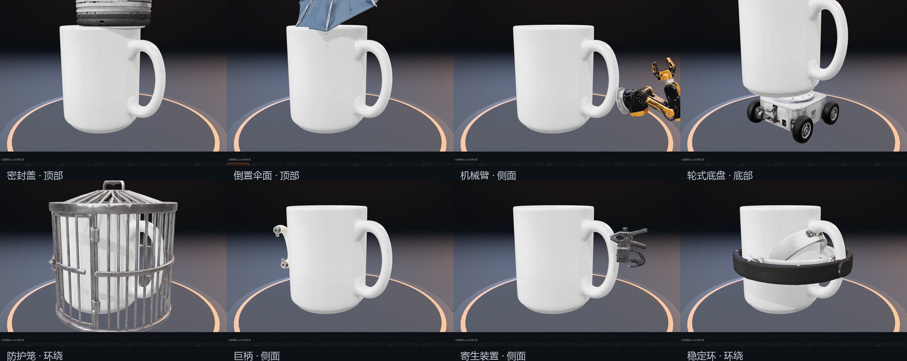
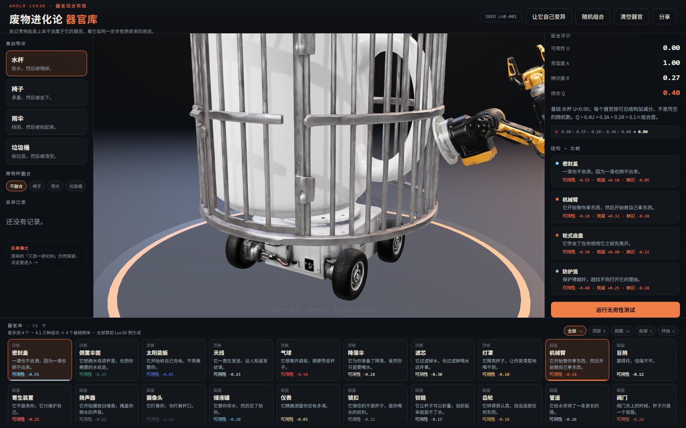
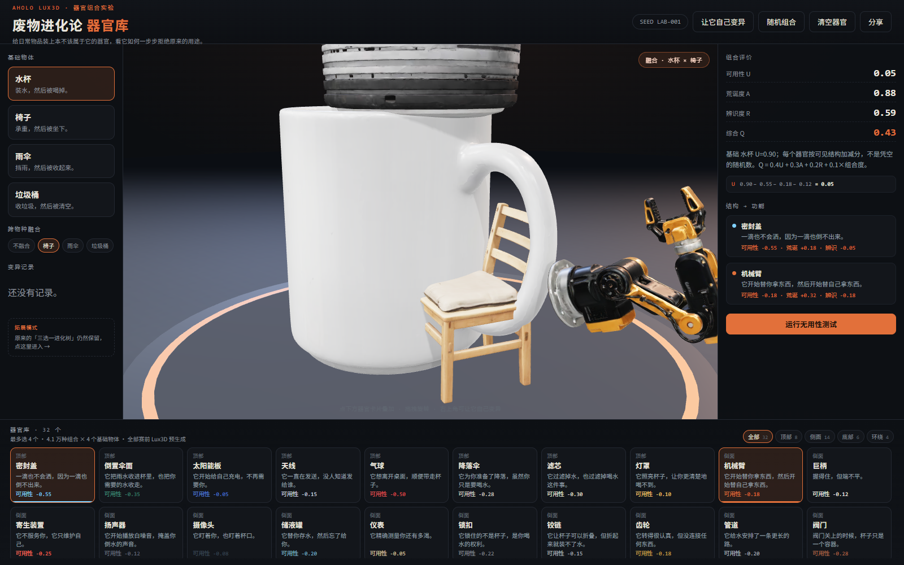
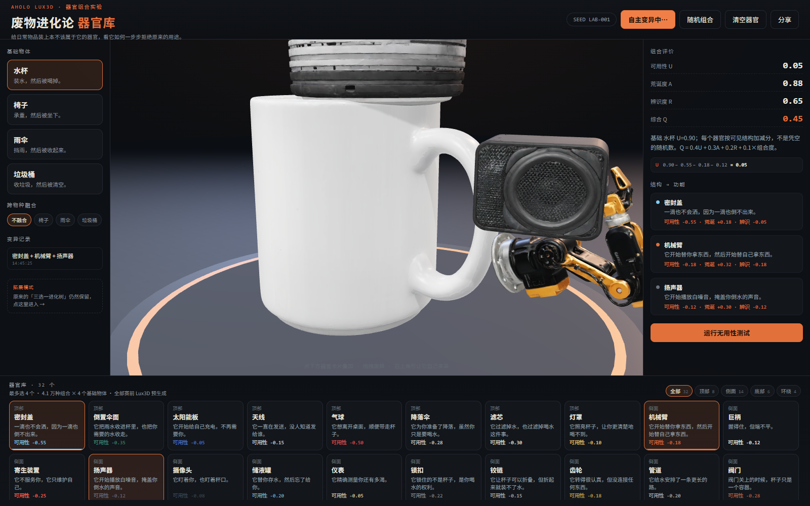

《废物进化论 · 器官库》把“过度设计”做成一套可以自由拼装的 3D 器官系统：4 个日常物体、32 个由 Aholo Lux3D 预生成的器官模块，每个基础物体最多叠加 4 个器官，形成 4.1 万种组合；再加上跨物种融合与每 4.8 秒一次的自主变异，物品会在你眼前一步步长出本不该属于它的结构。
与“单次文生 3D”不同，这里的每一个器官都是赛前建好的真实资产，运行时不调用任何模型接口；玩家做的是组合、观察与测试。评价也不是黑箱：右侧逐项列出每个器官对可用性、荒诞度、辨识度的加减，测试动作直接作用在当前拼装出的 GLB 上，并指出是哪一个器官触发了失败。
一个系统可以只优化单一指标：它越来越“成功”，同时越来越不适合被使用。水杯可以做到一滴也不洒，代价是一滴也倒不出来。
最初的版本是一棵三选一的进化树：每一代由规则生成三个候选，选中的分支交给 Lux3D 生成。它证明了“规则 → 模型”的链路，但玩家能选的东西太少，Lux3D 也被放进了运行时，等待时间打断了体验。
这一版把方向倒过来：Lux3D 只在赛前做建模，把“器官”做成一个个独立、可复用的真实资产；运行时只做拼装。玩家不再等模型，而是在 32 个已经建好的器官里自由组合，看同一只杯子如何被不同的结构一点点推离原来的用途。
每个器官都对应一个独立 GLB，装上就出现在模型上，不是只改一行文案或一个分数。
每个器官都带明确的可用性代价、荒诞度与辨识度；测试会指出具体是哪一个结构造成了失败。
顶 / 侧 / 底 / 环绕四类锚点，最多 4 个器官叠加；不预设“正确搭配”，也不阻止荒谬搭配。
运行时零 Lux3D 调用；所有器官在开发阶段批量生成、压缩、写入 manifest，Demo 只加载本地 GLB。
| 维度 | 单次文生 3D | 本作品 |
|---|---|---|
| 结果 | 一次性网格 | 可反复拼装的器官系统 |
| 因果 | 提示词即全部 | 器官 → 功能代价 → 组合 → 测试 |
| 选择 | 抽卡 | 32 选 4、融合、自主变异 |
| 模型调用 | 每次生成都要等 | 赛前预生成，运行时零调用 |
一次完整体验约 3–6 分钟。进入后先选基础物体，再从 32 个器官里挑最多 4 个装上；也可以打开“自主变异”，让物体自己长。

底部器官库按“顶部 / 侧面 / 底部 / 环绕”分成四类，并显示每类数量；卡片上直接写清可用性代价与一句结构说明。点击即叠加，超过 4 个时最早的一个被替换，保持画面可读。

系统分成两条时间线：赛前用 Lux3D 批量生产器官与基础资产；运行时只做查询、拼装、评价与测试。两条线通过 manifest 和本地 GLB 解耦。
| 层 | 内容 | 运行时行为 |
|---|---|---|
| 资产库 | 32 个器官 GLB + 4 个基础 GLB，按提示词哈希命名 | 只读；`POST /api/assets/lookup` 查 URL |
| 拼装 | 基础归一化、锚点定位、同锚点错位、轮式底盘抬升、融合体缩放 | 纯前端矩阵变换，无网络 |
| 评价 | 每个器官的 utility / absurdity / recognition 与 flags | 逐项相加，实时显示算式 |
| 测试 | 按 flags 选规则与动作 | 直接变换当前拼装 group |
| 模块 | 职责 |
|---|---|
| src/engine/organs.ts | 32 个器官的提示词、锚点、尺寸、功能影响、测试规则 |
| src/lab/Assembled.tsx | 加载基础与器官 GLB、归一化、锚点、错位、抬升、测试动画 |
| src/lab/Lab.tsx | 分类卡片、组合状态、自主变异、评分、分享 |
| scripts/generate-organs.ts | 分批并行提交 Lux3D 任务、串行轮询、写 manifest |
| server/lux3d.ts | 任务创建、状态机、GLB 落盘、提示词哈希缓存 |
32 个器官按安装位置分成四组。每个器官都有独立的 Lux3D 提示词、功能代价与至少一个功能标签；标签决定测试时它会触发哪一种失败。
| 锚点 | 数量 | 器官 | 典型功能冲突 |
|---|---|---|---|
| 顶部 | 8 | 密封盖、倒置伞面、太阳能板、天线、气球、降落伞、滤芯、灯罩 | 封住杯口 / 把水收走 / 把杯子拉走 |
| 侧面 | 14 | 机械臂、巨柄、寄生装置、扬声器、摄像头、储液罐、仪表、锁扣、铰链、齿轮、管道、阀门、喷气口、藤壶 | 替你拿 / 锁住 / 把水引走 / 推走 |
| 底部 | 6 | 轮式底盘、吸盘、钻头、机械腿、弹簧、菌丝 | 自己移动 / 固定 / 下钻 / 弹飞 |
| 环绕 | 4 | 稳定环、防护笼、散热鳍、羽毛 | 扶正 / 关住 / 挡住 / 隔绝 |
每个器官在 `OrganDef` 里写死三组值：可用性 utility、荒诞度 absurdity、辨识度 recognition。它们不是生成后猜的，而是设计时就确定的“结构代价”。例如：
| 器官 | U | A | R | 标签 | 为什么 |
|---|---|---|---|---|---|
| 密封盖 | -0.55 | +0.18 | -0.05 | sealed | 完全封住饮用口，但外观仍然像一只杯子 |
| 轮式底盘 | -0.30 | +0.40 | -0.22 | autonomous | 杯子会自己移动，你追不上 |
| 防护笼 | -0.40 | +0.25 | -0.28 | caged | 只能看，不能碰 |
| 气球 | -0.50 | +0.55 | -0.25 | float | 浮力把杯子拉离桌面 |
| 巨柄 | -0.12 | +0.16 | -0.05 | handle | 握得住，但重心偏到端不平 |

评价直接在界面上展开，不藏在一个总分后面。基础物体先有一个可用性起点，每装一个器官就按它的结构代价加减：
U = clamp( U_base + Σ organ.utility − 0.12 × fusion ) A = clamp( 0.08 + Σ organ.absurdity + 0.30 × fusion ) R = clamp( 1.00 + Σ organ.recognition − 0.18 × fusion ) Q = 0.4U + 0.3A + 0.2R + 0.1 × min(1, organs / 8)
水杯（U=0.90）装上密封盖（-0.55）、机械臂（-0.18）、轮式底盘（-0.30）、防护笼（-0.40）：U = 0.90 − 0.55 − 0.18 − 0.30 − 0.40 = −0.53，截断到 0.00；荒诞度 0.08+0.18+0.32+0.40+0.25 = 1.23，截断到 1.00；辨识度 1.00−0.05−0.18−0.22−0.28 = 0.27；Q = 0.40。界面右侧会逐项列出这四个数字，和模型上能看到的四个器官一一对应。

测试不是随机播一段动画，而是按当前组合的 flags 选规则，再对拼装好的 group 做对应的变换：
| 标签 | 结论 | 动作 |
|---|---|---|
| caged | 它被保护得太好了 | 整体缓慢旋转，笼子始终包住杯体 |
| sealed | 它拒绝被打开 | 向倾倒方向倾斜到 0.85 rad，水仍不出 |
| autonomous | 它在你伸手之前先动了 | 整体沿 x 轴移出画面，同时转向 |
| float | 它开始向上，而不是向内 | 整体持续上升，离开展台 |
| thrust | 它选择了方向，你只能松手 | 沿 x 轴来回冲，带倾斜 |
| burrow | 它向下生长，桌面成了新的杯底 | 整体下沉，直到没入地面 |
| bounce | 它把倒水变成了投掷 | 整体按 |sin| 弹跳 |
| spin | 它空转，但把水甩了出去 | 绕 y 轴持续旋转 |
| fold | 它折起来，容量也折没了 | 绕 z 轴折到 0.7 rad |
其余标签（watch / noise / heat / foul / spread / store / power / signal / drag / measure / lock / valve / route / walk / insulate / filter / glow）走同一套“规则 + 动作”框架，动作以轻微摆动或固定为主；规则文案见 `TEST_RULES`。
所有器官与基础物体都由 Aholo Lux3D 的 G1-Turbo 文生 3D 生成。提示词遵循同一套“隔离模块”模板：只描述器官本身、不描述杯子、不带背景物体，保证生成的网格可以被独立缩放和挂接。
An isolated [organ] module, [material / structure], [mounting interface], no main object, no background objects, product design render, centered, photorealistic, high detail.
`scripts/generate-organs.ts` 先查 manifest，跳过已缓存；剩余器官按 4 个一批并行提交，任务完成后串行轮询并落盘，避免多个任务同时写 manifest。每个资产都记录 taskId、提示词哈希、文件大小与生成时间。
| 器官 | taskId | 原始体积 | 压缩后 | 状态 |
|---|---|---|---|---|
| 密封盖 | 4788220 | — | 约 0.7 MB | 已压缩 |
| 机械臂 | 4788267 | — | 约 0.6 MB | 已压缩 |
| 轮式底盘 | 4788512 | — | 约 1.0 MB | 已压缩 |
| 稳定环 | 4788559 | — | 约 1.0 MB | 已压缩 |
| 倒置伞面 | 4788769 | — | 约 1.2 MB | 已压缩 |
| 防护笼 | 4789643 | 14.6 MB | 1.1 MB | 已压缩 |
| 巨柄 | 4789049 | — | 约 1.8 MB | 已压缩 |
| 寄生装置 | 4789094 | — | 约 1.1 MB | 已压缩 |
上表为 8 个首批器官；其余 24 个器官的 taskId、体积与压缩结果同样保存在 `public/models/manifest.json`，可按 `nodeId: organ:*` 复核。
器官不是简单叠在原点。拼装时先对基础做包围盒归一化，再根据锚点计算位置：顶置坐在杯口，侧置贴到身体半径，底置落地，环绕件按宽度包住；同一锚点的多个器官沿高度错开。轮式底盘会把基础整体抬起，让轮子真正接触地面，而不是陷进底盘。
融合不是换贴图，而是把第二个基础物体缩到 0.62、偏移到侧后方，与主基础互相穿插。评价同时扣 0.12 可用性、加 0.30 荒诞度、扣 0.18 辨识度；测试会优先提示“它们长在了一起”。

打开“自主变异”后，每 4.8 秒执行一次：有 32% 概率掉落一个器官，否则从未选器官里长出一个；结果写入变异记录，并在画面上方显示“自己长出了「气球」”这样的提示。玩家不点任何按钮，物体会自己变。

| 项目 | 结果 |
|---|---|
| 技术栈 | Vite 5 + React 18 + TypeScript + @react-three/fiber + drei + three 0.169 + zustand + Express/tsx |
| 构建 | `tsc -b && vite build` 通过；JS 约 1.25 MB（gzip 369 KB），CSS 61 KB |
| 资产 | 32 个器官 + 4 个基础；器官压缩后总计约 28 MB，全部资产约 44 MB |
| 运行时模型调用 | 0 次；Lab 只调用 `/api/assets/lookup` 查询本地 URL |
| 密钥 | 只存在于服务端 `.env`；前端 bundle、分享链接、报告、PPT、视频、zip 均不含密钥 |
| 分享 | `#lab=` + base64 `{f,o,s,x}`；只含基础、器官、种子与融合，不含任何服务端信息 |
| 兼容 | 旧版三选一进化树保留在 `?tree=1`，旧分享 `#s=` 仍可用 |
原来的“三选一进化树”没有被删除：它保留了规则生成、DAG 谱系、杂交与确定性校验，作为“拓展模式”放在 `?tree=1`。新主模式负责“自由组合与即时反馈”，旧模式负责“长路径与谱系叙事”，两者共用同一套 Lux3D 资产与 manifest。
| 项目 | 内容 |
|---|---|
| Demo | 【部署后填写，保留至 2026-12-31】 |
| 运行 | Windows 双击 `启动Demo.bat`（构建 → 启动 8787 → 打开浏览器）；`停止Demo.bat` 释放端口。手动：`npm install` → `npm run dev`，或 `npm run build && npm start` |
| 主入口 | `/` 器官库；`/?tree=1` 旧版进化树；`/#lab=...` 分享组合 |
| 材料 | 本报告、路演 PPT、演示视频、提交文案、源代码 zip |
| 团队 | 【姓名 / 分工】 |
| 声明 | 所有 3D 资产由 Aholo Lux3D G1-Turbo 生成；报告中的评分、组合数与测试结果均由当前代码实际运行得出。 |
参考：Aholo Lux3D API 文档（text-to-3D task create / get）；2026 Aholo 全球 3D AI 黑客松赛事要求。